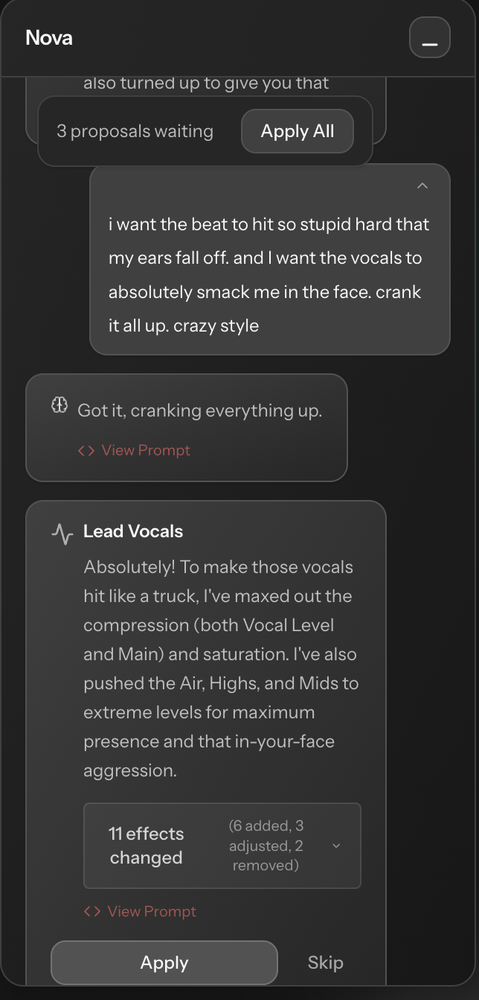

02. AI & Engineering

Nova: The "Mix Assistant" Engine
Conversational Mixing
Users don't always know DSP terms. Nova translates semantic intent ("Make it sound like The Weeknd") into technical execution.

Fig 1: Natural Language Query Interface
The RAG System (Retrieval-Augmented Generation)
We upgraded the LLM pipeline to retrieve context from our spectral analysis engine before generating a response.
system_prompt.py
def analyze_intent(user_query):
# RAG Retrieval
context = vector_db.query(
index="sonic_profiles",
query=user_query
)
# Map to DSP Parameters
return {
"compression_ratio": context.dynamic_range,
"eq_curve": context.spectral_tilt
}
# RAG Retrieval
context = vector_db.query(
index="sonic_profiles",
query=user_query
)
# Map to DSP Parameters
return {
"compression_ratio": context.dynamic_range,
"eq_curve": context.spectral_tilt
}